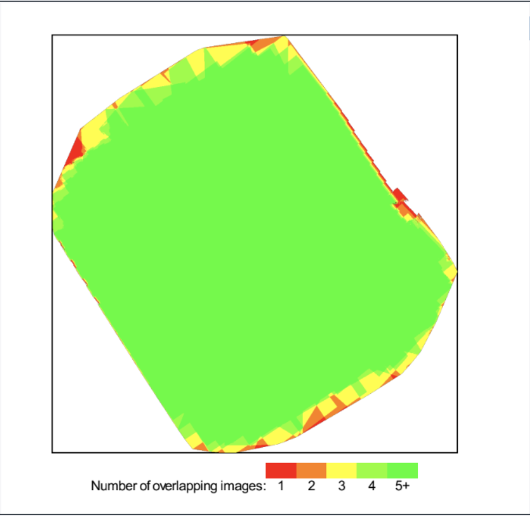
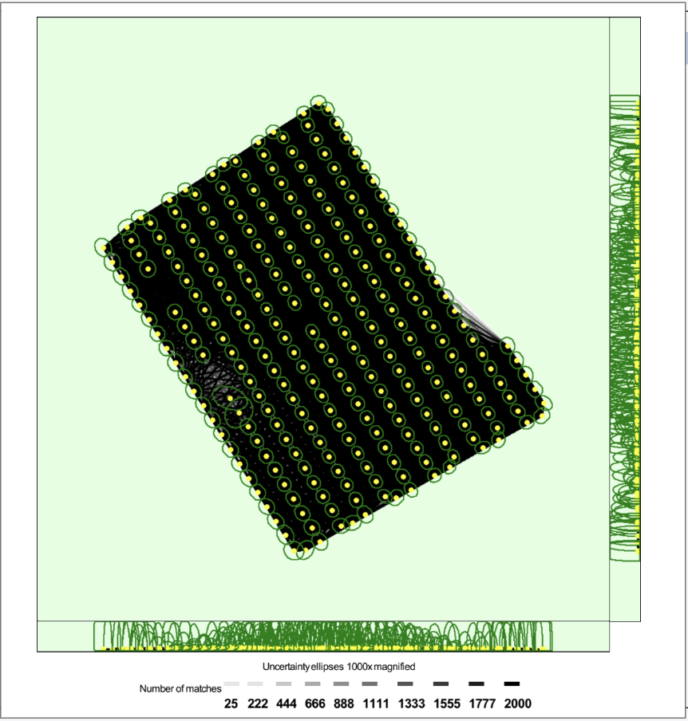
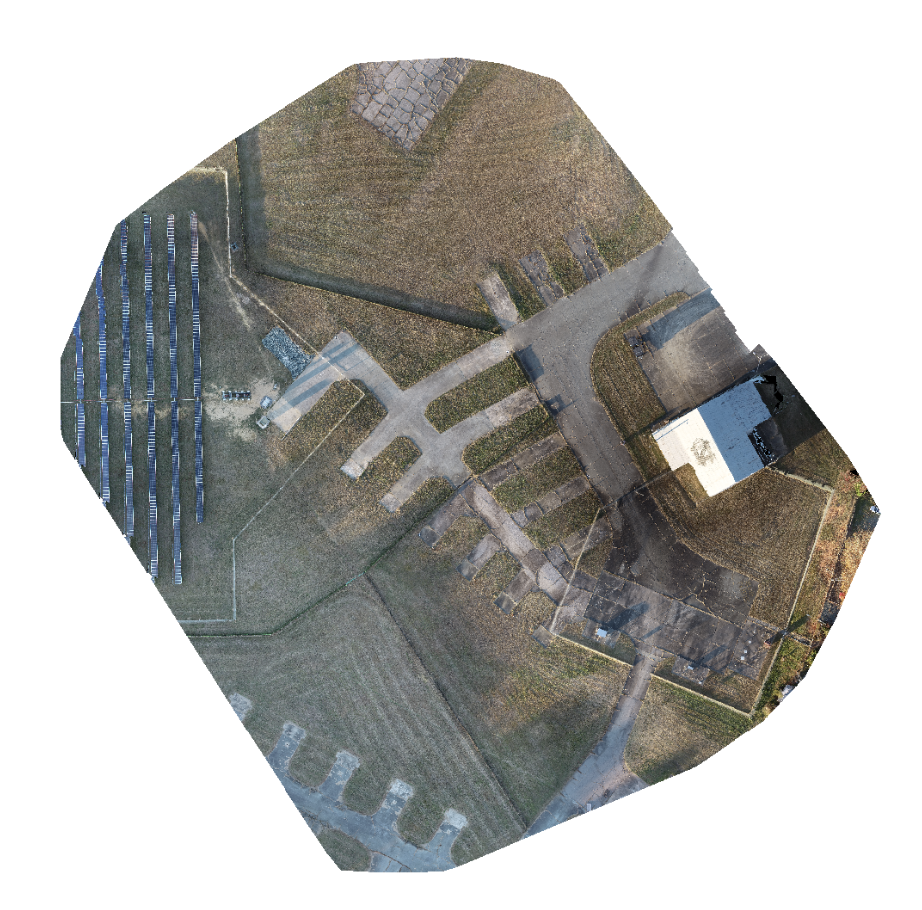

UAV-based geospatial data collection and photogrammetric processing to produce high-accuracy orthomosaics and validate survey precision.
Pix4D • ArcGIS Pro • R Studio
sUAS flight mission planning, aerial image capture, photogrammetric processing, orthomosaic generation, GPS & ground control point alignment, and statistical validation against traditional survey methods.

High-overlap aerial imagery collected through structured UAV flight missions.

Feature detection and tie-point generation for accurate image alignment.

Georeferenced orthorectified mosaic generated for spatial analysis and measurement.
This project demonstrates a complete drone mapping workflow using Pix4D. Images were captured via sUAS flight missions, processed to identify ground control points, and transformed into a georeferenced orthomosaic.
The workflow included image alignment, keypoint matching, bundle adjustment, and orthorectification to produce a high-resolution spatial dataset suitable for measurement and validation analysis.
Drone-derived GPS measurements were compared with traditional ground surveys for length, width, and positional accuracy.
Results showed no statistically significant differences in horizontal measurements. Elevation accuracy was less reliable due to limited GCPs and environmental constraints.
The UAV workflow significantly reduced time requirements, demonstrating strong potential for large-scale or difficult-to-access survey areas.